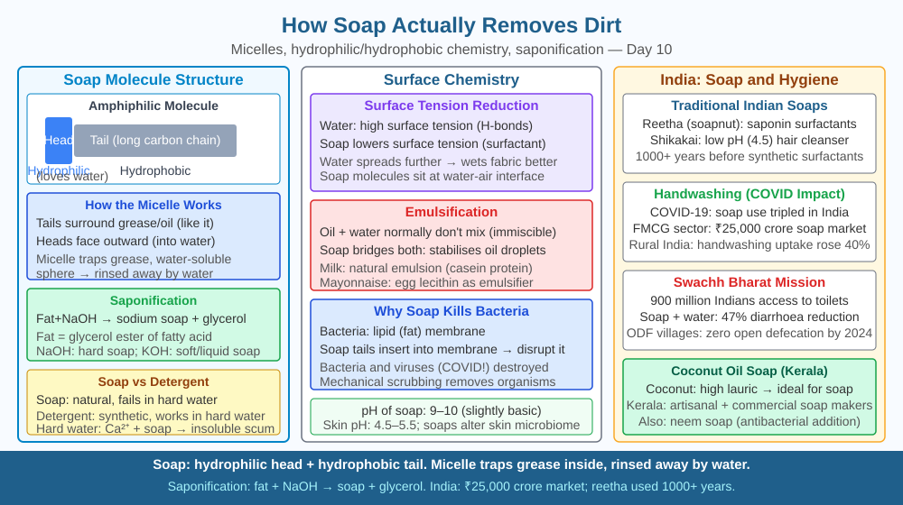

By the end of this lesson, you should be able to describe the amphiphilic structure of a soap molecule, explain micelle formation step by step, and predict why soap loses its cleaning ability in hard water containing calcium and magnesium ions.
You are cooking in the kitchen and your hands are coated in mustard oil. You hold them under running water — nothing happens. Water runs right off the oil without picking it up. Then you pick up a bar of soap, rub it on your hands for 20 seconds, rinse — and the oil is gone. Water alone cannot do what water-plus-soap does in 20 seconds. But soap is also mostly carbon and hydrogen. It does not chemically react with the oil or oxidise it. How does rubbing a bar of soap on greasy hands remove the grease using nothing but water as the rinsing agent?
The answer is the amphiphilic (or amphipathic) molecular structure of soap — a structure that allows soap to act as a bridge between water and oil, two liquids that cannot ordinarily mix.
Structure of a soap molecule.
Soap is made by reacting a fat or oil with a strong base (sodium hydroxide, NaOH, for solid soap; potassium hydroxide, KOH, for liquid soap). This reaction is called saponification. A fat is a molecule with a long hydrocarbon chain (often 12–18 carbons) attached to a glycerol backbone via an ester linkage. Saponification breaks the ester bond, releasing the long-chain fatty acid as its sodium salt.
The resulting soap molecule has two chemically distinct ends:
Common soaps include sodium stearate (18-carbon chain) and sodium palmitate (16 carbons). Coconut oil soap — prevalent in Kerala — is rich in sodium laurate (12 carbons), giving good lathering at shorter chain length.
Step 1 — Soap molecules enter the water. When soap is rubbed onto wet skin, the sodium or potassium ions dissociate (soap ionises in water). The carboxylate heads dissolve into the water. The hydrophobic tails are repelled by the water and would rather be in contact with oil or with each other.
Step 2 — Micelle formation. Above a concentration called the critical micelle concentration (CMC), soap molecules spontaneously organise into micelles — roughly spherical aggregates of 50–100 soap molecules. In a micelle:
The interior of the micelle is now a small oil-like compartment.
Step 3 — Oil is captured inside the micelle. When a micelle encounters a droplet of oil or grease on the skin, the hydrophobic tails insert themselves into the oil. The oil droplet is engulfed inside the micelle's hydrophobic core. The oil is now completely surrounded by the hydrophilic heads on the exterior, making the entire oil-containing micelle soluble in water.
Step 4 — Rinsing. When water is poured over the skin, the micelles — with the oil trapped inside — are washed away. The oil has not been chemically decomposed; it has been physically enclosed in a water-soluble package. The skin is left clean.
Why water alone fails. Water is a polar molecule. Oil is non-polar. Polar and non-polar substances do not mix because the intermolecular attractions in water (hydrogen bonds) are far stronger than any attraction between water and oil molecules. Without soap, oil sits on the skin surface and water slides around it.
Hard water and soap scum.
Hard water contains dissolved calcium ions (Ca²⁺) and magnesium ions (Mg²⁺). These ions come from limestone and chalk rocks that rainwater passes through. In hard water, Ca²⁺ and Mg²⁺ react with the carboxylate head of soap:
2 RCOO⁻ (soap) + Ca²⁺ → (RCOO)₂Ca (calcium soap, insoluble)
Calcium soap and magnesium soap are insoluble in water. They precipitate as a sticky white solid — the familiar "scum" seen in hard-water areas. Once the soap has reacted with calcium and magnesium ions, its molecules can no longer form micelles properly (the charged heads are neutralised). The cleaning action stops until all the Ca²⁺ and Mg²⁺ ions are consumed — which is why you need much more soap in hard water areas.
Synthetic detergents were designed specifically to overcome this limitation. Detergents have a similar amphiphilic structure but their hydrophilic head is a sulfonate group (–SO₃⁻Na⁺) rather than a carboxylate (–COO⁻Na⁺). Calcium and magnesium sulfonates are soluble — they do not precipitate as scum. This is why washing powders (e.g. Surf Excel, Ariel) work equally well in the hard water found in many Indian cities, while soap bars are less efficient there.
Think of each soap molecule as a tiny tadpole:
When many tadpoles are in water with oil present, they crowd around each oil droplet with their tails pointing into the oil and their heads pointing into the water. The result is a water-soluble oil-package (micelle) that can be rinsed away.
Key mechanism sequence: 1. Soap ionises in water → amphiphilic molecules free to move 2. Above CMC → spontaneous micelle formation 3. Hydrophobic core of micelle engulfs oil droplet 4. Micelle exterior (hydrophilic) makes whole package water-soluble 5. Rinsing flushes micelles and trapped oil off the skin
Disruption: Ca²⁺ or Mg²⁺ ions react with the carboxylate head → insoluble scum → heads no longer charged → micelles cannot form → cleaning fails.
The included SVG shows two panels:

Rank three washing scenarios from most to least effective: (A) soft water + soap, (B) hard water (300 mg/L Ca²⁺) + soap, (C) hard water + synthetic detergent. Explain each ranking using the micelle mechanism and what Ca²⁺ does (or does not do) to each type of cleaning molecule.
Then predict: if washing soda (Na₂CO₃) is dissolved in the hard water before adding soap — precipitating Ca²⁺ as CaCO₃ and removing it from solution — would scenario B's cleaning effectiveness improve to match scenario A? Justify using the micelle formation requirement.
How does soap remove oil-based dirt from skin?
Correct answer: a
Why is understanding the micelle mechanism of soap more useful than knowing it cleans?
Correct answer: c
What would happen to soap's cleaning ability in hard water with high mineral content?
Correct answer: b
Explain today's concept to a younger student in 60 seconds without technical jargon. Then explain it again using the correct scientific vocabulary.
If both explanations describe the same mechanism, you have understood the concept rather than memorised it.
Every cell membrane in your body is a phospholipid bilayer — the same amphiphilic physics as a micelle, but in a flat sheet. Each phospholipid has a hydrophilic phosphate head and a hydrophobic fatty-acid tail. Two sheets arrange themselves tail-to-tail (hiding from water), heads outward. This requires no energy — it self-assembles by the same water-loves-water, oil-loves-oil logic that makes micelles form. Your 37 trillion cells are enclosed by a structure built on exactly the same principle as a bar of soap.
Soap removes oil-based dirt because each soap molecule has a hydrophilic (ionic) head and a hydrophobic (hydrocarbon) tail; in water, many soap molecules arrange themselves into micelles with their tails enclosing the oil droplet and their heads facing outward, making the entire oil-packed micelle water-soluble and rinseable — a mechanism that fails in hard water because Ca²⁺ and Mg²⁺ ions react with the soap heads to form insoluble scum before micelles can form.